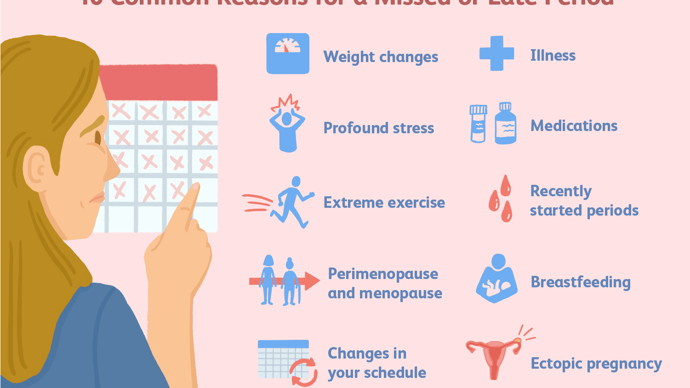

regular
irregular
Note : If Mensutration is Regular Click on Regular else Irregular

Choose irregular if you have below symptoms
Your menstrual cycle might be regular — about the same length every month
your period might be light or heavy, painful or pain-free, long or short, and still be considered normal.
your diet and mental health causes regular
Choose irregular if you have below symptoms
Your periods suddenly stop for more than 90 days — and you're not pregnant
You bleed for more than seven days
You bleed more heavily than usual or soak through more than one pad or tampon every hour
Your periods are less than 21 days or more than 35 days apart You bleed between periods
You develop severe pain during your period
You suddenly get a fever and feel sick after using tampons
for consultancy click on the link
|